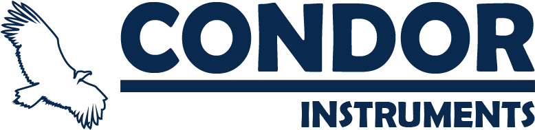
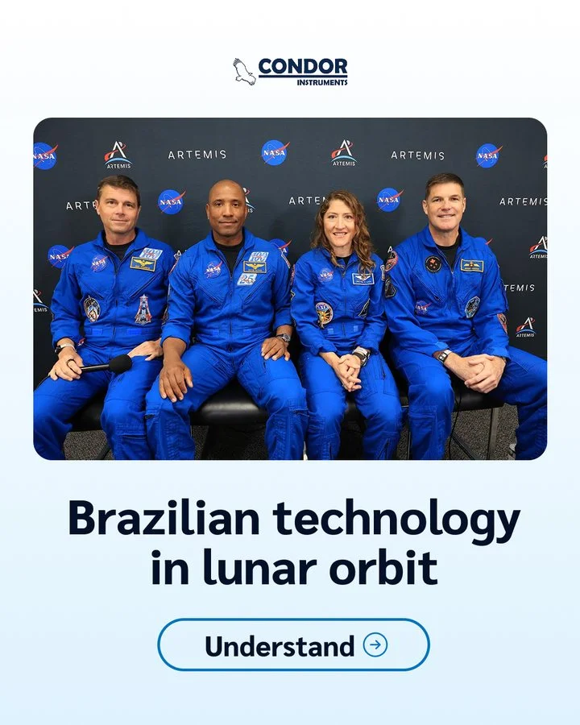
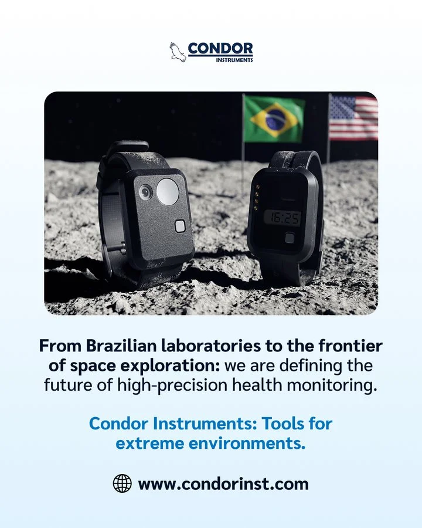
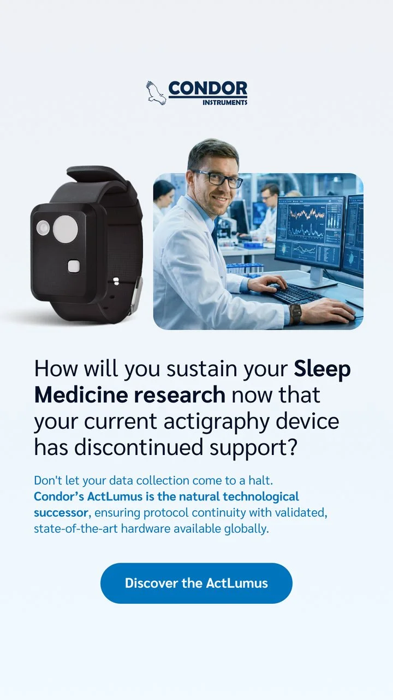

CASE 01 · NASA · ARTEMIS II
Condor Instruments
- Contexto
- Actígrafo ActLumus usado pelos 4 astronautas da Artemis II, a primeira tecnologia brasileira em espaço profundo tripulado.
- O que fiz
- Criativos orgânicos e tráfego pago com o case Artemis II como prova central de credibilidade.
- Resultado
- Vendas para Stanford e Harvard e expansão para o setor de mineração.


